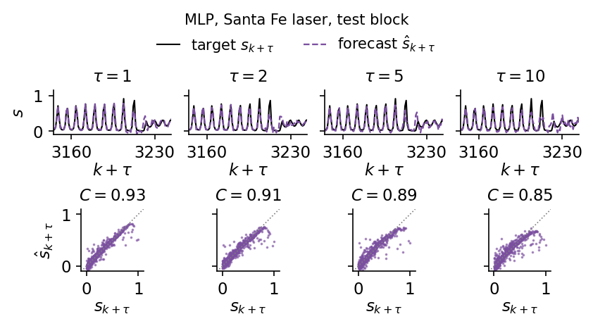
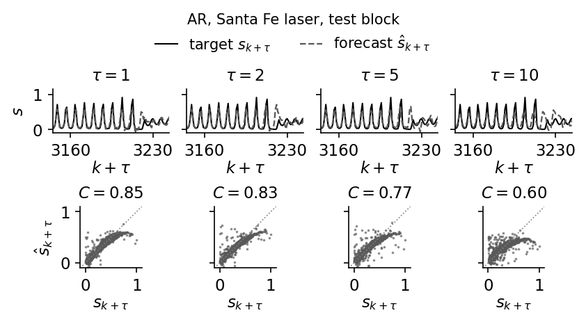
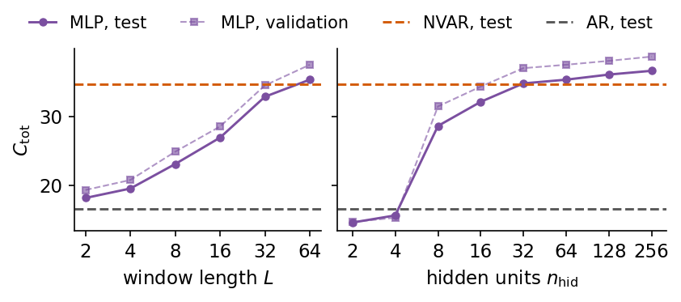
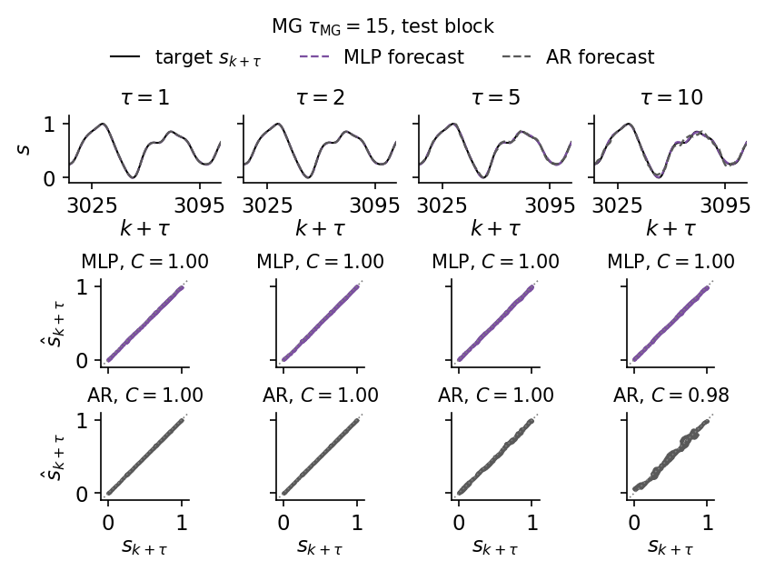
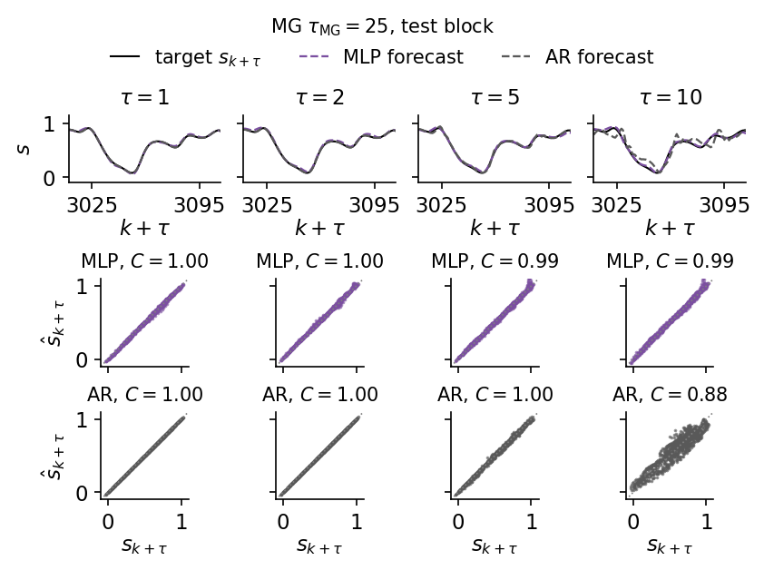
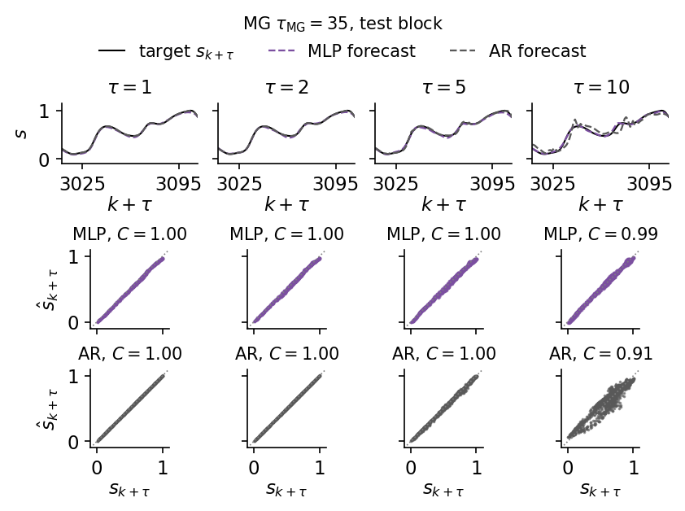
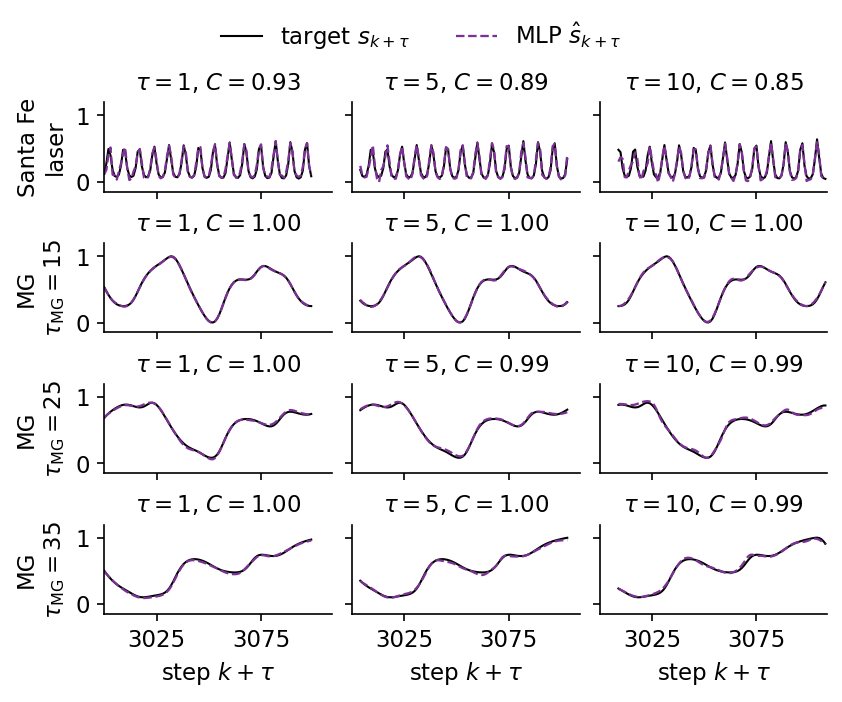

A forecasting model receives the past of a measured signal \(s_1,s_2,\dots,s_k\) and returns the future values \(\hat s_{k+\tau}\) for the leads \(\tau=1,\dots,50\). In this notebook the model is a multilayer perceptron (MLP) with one hidden layer of tanh units. It reads the window of the last \(L\) values and returns all 50 leads at once, one output per lead. This is a direct multi-horizon forecast, and no prediction is ever fed back as an input.
We work mainly with the intensity of the Santa Fe laser, a measured chaotic signal whose large pulses and sudden collapses are hard for linear models, and at the end we compare it with the Mackey–Glass delay equation at three delays, one periodic and two chaotic. We first describe the signal, the forecasting protocol and the scores. Persistence, a linear autoregressive (AR) model and a nonlinear vector autoregression (NVAR) are fitted on the same data and serve as references. We then define the MLP, draw it, count its parameters, implement it with flax.nnx and train it by gradient descent with early stopping while we watch the training and validation losses. The forecasts are compared with the references lead by lead and with the same network built and trained by scikit-learn, and a series of cheap experiments shows how the result depends on the window length, the hidden size, the random seed, the number of training epochs and the size of the training set. The Mackey–Glass section closes the notebook.
The implementation uses JAX. The network is a flax.nnx module, the optimiser comes from optax, and every training epoch is one jit-compiled program. The ridge regressions of the reference models are implemented in JAX and compared with scikit-learn, the NVAR features are compared with ReservoirPy, and the MLP implementation in JAX is compared with the scikit-learn MLPRegressor.
How to run this notebook in Google Colab 1. Go to https://colab.research.google.com → File → Upload notebook. The first code cell sets JAX_PLATFORMS=cpu. The whole notebook runs in about two minutes on a multi-core CPU. 2. jax, flax, optax, scikit-learn and matplotlib are pre-installed in Colab. ReservoirPy is installed with pip install reservoirpy. 3. The first code cell downloads the data file into a folder data next to the notebook. 4. Run the cells in order. Later cells use variables defined earlier.
Code
# data files of this notebook, downloaded from the course repository if they are not in ./dataimport os, urllib.requestos.makedirs("data", exist_ok=True)for name in ['santafe_laser.txt']:ifnot os.path.exists(f"data/{name}"): urllib.request.urlretrieve(f"https://raw.githubusercontent.com/MarcinPlodzien/deep-learning-for-classical-and-quantum-physics/main/notebooks/lecture-08/data/{name}", f"data/{name}")
Code
import osos.environ["JAX_PLATFORMS"] ="cpu"# run JAX on the CPU (set before importing jax)import json, timefrom functools import partialimport numpy as npimport matplotlib as mplimport matplotlib.pyplot as pltfrom matplotlib.patches import Circleimport jax, jax.numpy as jnpjax.config.update("jax_enable_x64", True) # signals and ridge regressions in float64, networks in float32import optaximport flaxfrom flax import nnximport sklearnfrom sklearn.linear_model import Ridge as SkRidgefrom sklearn.neural_network import MLPRegressorimport copyimport reservoirpyfrom reservoirpy.nodes import NVAR as RpyNVAR# common style of the notebook figuresmpl.rcParams.update({"font.size": 14, "axes.labelsize": 15, "axes.titlesize": 15,"xtick.labelsize": 13, "ytick.labelsize": 13, "legend.fontsize": 12,"figure.titlesize": 16, "lines.linewidth": 2.0,"axes.spines.top": False, "axes.spines.right": False, "legend.frameon": False})# slide figures are drawn at their printed size (5.5 in = full width of a slide), so these are true font sizesSLIDE_RC = {"font.size": 11, "axes.labelsize": 11, "axes.titlesize": 11, "xtick.labelsize": 11,"ytick.labelsize": 11, "legend.fontsize": 11, "lines.linewidth": 1.4, "figure.dpi": 150}UJBlue, UJNavy, DSOrange, UJGray ="#005CA7", "#002B5C", "#D35A05", "#5A6270"# one colour and line style per model, used in every figureSTYLE = {"persistence": dict(color="0.55", ls=":"), "AR": dict(color="0.35", ls="--"),"NVAR": dict(color=DSOrange, ls="--"), "MLP": dict(color="#7B4FA0", ls="-"),"sklearn MLP": dict(color="#2A9D8F", ls="-.")}MODELS = ("persistence", "AR", "NVAR", "MLP")MODELS_ALL = MODELS + ("sklearn MLP",)OUT ="figures"os.makedirs(OUT, exist_ok=True)def save(fig, name):# slide figures are created at their printed size and saved as PDF (slides) and PNGfor ext in ("pdf", "png"): fig.savefig(f"{OUT}/{name}.{ext}", dpi=300, bbox_inches="tight", pad_inches=0.02)nums = {} # every number a slide may need, written to the numbers file at the endt_start = time.time()print("jax", jax.__version__, "| flax", flax.__version__, "| optax", optax.__version__,"| scikit-learn", sklearn.__version__, "| reservoirpy", reservoirpy.__version__)
The Santa Fe laser series is the measured output intensity of a single-mode far-infrared NH\(_3\) laser recorded by Hübner, Abraham and Weiss [Phys. Rev. A 40, 6354 (1989), doi:10.1103/PhysRevA.40.6354]. It became data set A of the Santa Fe time series prediction competition [A. S. Weigend and N. A. Gershenfeld (eds.), Time Series Prediction, Addison-Wesley (1994), reissued by Routledge (2018), doi:10.4324/9780429492648]. The intensity is digitised to integers between 0 and 255 in arbitrary units. We use the first \(N=4000\) samples.
The Mackey–Glass delay equation at the delays \(\tau_{\rm MG}=15,25,35\) is generated here as well, since it returns as a contrast at the end of the notebook. Its generator integrates the delay equation by the fourth-order Runge–Kutta method with step 0.1, takes the delayed value at half steps by linear interpolation, starts from the constant history \(s=1.2\), discards a transient and keeps one sample per time unit. Each signal is rescaled to \([0,1]\) with the minimum and maximum of its first 2500 samples, the part of the training block used for fitting, so the validation and test blocks may slightly exceed this interval.
Code
def santafe(path="data/santafe_laser.txt"):return np.loadtxt(path).astype(float)# Mackey-Glass: dx/dt = beta x(t-tau)/(1+x(t-tau)^n) - gamma x, beta=0.2, gamma=0.1, n=10;# RK4 with h=0.1, the delayed value at half steps by linear interpolation, constant history# x=1.2 on [-tau, 0], first 3000 fine steps discarded, every 10th point kept (unit sampling).def mackey_glass(tau, n_samples, h=0.1, x0=1.2, transient=3000, every=10, beta=0.2, gamma=0.1, n=10): lag =int(round(tau / h)) f =lambda x, xd: beta * xd / (1.0+ xd**n) - gamma * xdef step(buf, _):# buf = (x[i-lag], ..., x[i]) is the delay window, length lag+1 x, xd0, xd1 = buf[-1], buf[0], buf[1] xdh =0.5* (xd0 + xd1) k1 = f(x, xd0); k2 = f(x +0.5*h*k1, xdh); k3 = f(x +0.5*h*k2, xdh); k4 = f(x + h*k3, xd1) xn = x + h/6.0*(k1 +2*k2 +2*k3 + k4)return jnp.concatenate([buf[1:], xn[None]]), xn n_steps = transient + n_samples * every _, xs = jax.lax.scan(step, jnp.full(lag +1, x0), None, length=n_steps) x = np.concatenate([np.full(lag +1, x0), np.asarray(xs)])return x[transient::every][:n_samples]# Common protocol: N = 4000 samples per signal; train = first 3000 (last 500 of them = validation),# test = last 1000; rescale to [0,1] with min/max of the first 2500 samples (fitting part of the training block); horizons tau = 1..50.N_SAMPLES, N_TRAIN, N_VAL, TAU_MAX =4000, 3000, 500, 50def rescale01(s, n_train=N_TRAIN - N_VAL): lo, hi = s[:n_train].min(), s[:n_train].max()return (s - lo) / (hi - lo)sf_raw = santafe() # measured intensity, arbitrary unitsprint(f"Santa Fe record: {len(sf_raw)} samples, intensity from {sf_raw.min():.0f} to {sf_raw.max():.0f} (arbitrary units)")raw = {"SantaFe": sf_raw[:N_SAMPLES], "MG15": mackey_glass(15, N_SAMPLES),"MG25": mackey_glass(25, N_SAMPLES), "MG35": mackey_glass(35, N_SAMPLES)}MG = ("MG15", "MG25", "MG35")LABEL = {"SantaFe": "Santa Fe laser", "MG15": r"MG $\tau_{\rm MG}=15$", "MG25": r"MG $\tau_{\rm MG}=25$","MG35": r"MG $\tau_{\rm MG}=35$"}sig = {name: rescale01(x) for name, x in raw.items()} # [0, 1] on the training block (first 3000 samples)for name, s in sig.items():print(f"{name:8s} N = {len(s)} train range [{s[:N_TRAIN].min():.2f}, {s[:N_TRAIN].max():.2f}]"f" test range [{s[N_TRAIN:].min():.3f}, {s[N_TRAIN:].max():.3f}]")nums["santafe_record_length"] =len(sf_raw)# pulsation period = lag of the first maximum of the autocorrelation function on the training blockx = sig["SantaFe"][:N_TRAIN] - sig["SantaFe"][:N_TRAIN].mean()acf = np.array([np.dot(x[:-l], x[l:]) / np.dot(x, x) for l inrange(1, 30)])lags = np.arange(1, 30)is_max = (acf[1:-1] > acf[:-2]) & (acf[1:-1] > acf[2:])T_PULSE =int(lags[1:-1][is_max][0])print(f"first maximum of the autocorrelation function at lag {T_PULSE} (value {acf[T_PULSE -1]:.2f})")nums["santafe_pulse_period"] = T_PULSE
Santa Fe record: 10093 samples, intensity from 0 to 255 (arbitrary units)
SantaFe N = 4000 train range [0.00, 1.00] test range [0.004, 1.000]
MG15 N = 4000 train range [0.00, 1.00] test range [0.000, 1.000]
MG25 N = 4000 train range [0.00, 1.00] test range [-0.035, 1.027]
MG35 N = 4000 train range [0.00, 1.02] test range [0.004, 1.005]
first maximum of the autocorrelation function at lag 8 (value 0.76)
The laser emits regular pulsations. Their period follows from the autocorrelation function \(\rho(n)=\sum_k(s_k-\bar s)(s_{k+n}-\bar s)/\sum_k(s_k-\bar s)^2\) on the training block, whose first maximum lies at the lag printed above. The figure below shows the whole record \(s_k\) with the three blocks of the chronological split, which are introduced in the protocol below. Over a few hundred samples the pulse amplitude grows, and then the intensity collapses at an irregular time and the growth starts again.
The left panel enlarges one collapse and the growth that follows it. The right panel plots \(s_k\) against \(s_{k-2}\) for all training samples, a two-dimensional delay embedding of the signal. Each pulsation is one turn of a spiral that winds outwards while the amplitude grows, and a collapse sends the trajectory back to the centre. Near the outer turns the future depends sensitively on the recent values, since a slightly different pulse can be followed either by a larger one or by a collapse. A forecast of the laser is therefore a strongly nonlinear function of the past window, which a weighted sum of past values cannot represent.
The 4000 samples are split in time order. The first 3000 form the training block, and its last 500 samples serve as validation. The final 1000 samples are the test block. A forecast is made at an origin \(k\) from the window of the last \(L=64\) values, and the targets are the next 50 values, \[\mathbf u_k=(s_{k-L+1},\dots,s_{k-1},s_k)\in\mathbb R^{L},\qquad \mathbf y_k=(s_{k+1},\dots,s_{k+50})\in\mathbb R^{50}.\] The origins are chosen so that no target crosses a block boundary. Fitting uses the origins \(k=63,\dots,2449\), whose targets lie inside the first 2500 samples, validation the origins \(k=2499,\dots,2949\), and testing the origins \(k=2999,\dots,3949\). A window may reach back into an earlier block, since its values are known at the time of the forecast.
Code
L_WIN =64# window length LK_FIT = np.arange(L_WIN -1, N_TRAIN - N_VAL - TAU_MAX) # origins 63..2449K_VAL = np.arange(N_TRAIN - N_VAL -1, N_TRAIN - TAU_MAX) # origins 2499..2949K_TEST = np.arange(N_TRAIN -1, N_SAMPLES - TAU_MAX) # origins 2999..3949TAUS = np.arange(1, TAU_MAX +1)def windows(s, ks, L=L_WIN):# inputs U[i] = (s_{k-L+1}, ..., s_k) and targets Y[i] = (s_{k+1}, ..., s_{k+50}) for k = ks[i]assert ks.min() - L +1>=0, "the window must not reach before the first sample" U = s[ks[:, None] + np.arange(-L +1, 1)[None, :]] Y = s[ks[:, None] + TAUS[None, :]]return U, YU_tmp, Y_tmp = windows(sig["SantaFe"], K_TEST)assert U_tmp.shape == (len(K_TEST), L_WIN) and Y_tmp.shape == (len(K_TEST), TAU_MAX)assert U_tmp[0, -1] == sig["SantaFe"][K_TEST[0]] and Y_tmp[0, 0] == sig["SantaFe"][K_TEST[0] +1]assert (K_FIT + TAU_MAX).max() < N_TRAIN - N_VAL and (K_VAL + TAU_MAX).max() < N_TRAINassert K_TEST[0] +1== N_TRAIN and (K_TEST + TAU_MAX).max() == N_SAMPLES -1print(f"origins: fit {len(K_FIT)} ({K_FIT[0]}..{K_FIT[-1]}), validation {len(K_VAL)} ({K_VAL[0]}..{K_VAL[-1]}),"f" test {len(K_TEST)} ({K_TEST[0]}..{K_TEST[-1]})")nums["protocol"] =dict(L=L_WIN, n_fit=len(K_FIT), n_val=len(K_VAL), n_test=len(K_TEST), tau_max=TAU_MAX)
origins: fit 2387 (63..2449), validation 451 (2499..2949), test 951 (2999..3949)
Scores
For each lead \(\tau\) we compare the forecasts \(\hat s_{k+\tau}\) with the true values \(s_{k+\tau}\) over the \(n\) test origins with the Pearson correlation coefficient \[r(\tau)=\frac{\sum_k\big(\hat s_{k+\tau}-\overline{\hat s}_{\tau}\big)\big(s_{k+\tau}-\overline{s}_{\tau}\big)}{\sqrt{\sum_k\big(\hat s_{k+\tau}-\overline{\hat s}_{\tau}\big)^2\,\sum_k\big(s_{k+\tau}-\overline{s}_{\tau}\big)^2}},\] where the bars denote averages over the test origins at fixed \(\tau\). The forecast capacity \(C(\tau)=r(\tau)^2\in[0,1]\) is the fraction of the variance of the target that a linear rescaling of the forecast explains. Its sum over the 50 leads, the total capacity \[C_{\rm tot}=\sum_{\tau=1}^{50}C(\tau)\le 50,\] summarises a whole curve. The skill horizon \(\tau_{1/2}\) is the first lead with \(C(\tau)<0.5\), and we write \(\tau_{1/2}>50\) when the capacity stays above one half at all leads. The function score computes all of these from the arrays of forecasts and targets, and we check it against numpy on random data.
Code
@jax.jitdef pearson_r(pred, true):# pred, true: (n, TAU_MAX); Pearson coefficient over the n origins, one value per lead pc, tc = pred - pred.mean(0), true - true.mean(0)return jnp.sum(pc * tc, 0) / jnp.sqrt(jnp.sum(pc **2, 0) * jnp.sum(tc **2, 0))def score(pred, true):# dictionary with r(tau), C(tau) = r^2, C_tot and the skill horizon tau_1/2 r = np.asarray(pearson_r(jnp.asarray(pred, jnp.float64), jnp.asarray(true, jnp.float64))) C = r **2 below = np.nonzero(C <0.5)[0]returndict(r=r, C=C, Ctot=float(C.sum()), tau_half=int(below[0] +1) iflen(below) elseNone)# check the JAX score against numpy on random datarng = np.random.default_rng(0)a, b = rng.normal(size=(500, TAU_MAX)), rng.normal(size=(500, TAU_MAX))r_np = np.array([np.corrcoef(a[:, j] +0.5* b[:, j], b[:, j])[0, 1] for j inrange(TAU_MAX)])print("max |r_jax - r_numpy| =", np.abs(score(a +0.5* b, b)["r"] - r_np).max())
max |r_jax - r_numpy| = 6.106226635438361e-16
The JAX and numpy correlation coefficients agree to round-off, so the same function can score every model below.
2. Persistence, AR and NVAR baselines
Persistence repeats the last value, \(\hat s_{k+\tau}=s_k\), needs no fitting and sets the floor that any model must beat. The direct AR model of order \(p\) and the NVAR model are ridge regressions on features of the delay vector \(\mathbf d_k=(s_k,s_{k-1},\dots,s_{k-p+1})\), \[\hat{\mathbf y}_k=W^\top\boldsymbol\phi(\mathbf d_k)+\mathbf b,\qquad \boldsymbol\phi_{\rm AR}=\mathbf d_k,\qquad \boldsymbol\phi_{\rm NVAR}=\big(\mathbf d_k,\ \{s_{k-i}s_{k-j}\}_{0\le i\le j<p}\big),\] where \(W\) has one column per lead and NVAR has \(p+p(p+1)/2\) features [Gauthier et al., Nat. Commun. 12, 5564 (2021), doi:10.1038/s41467-021-25801-2]. Ridge regression minimises \(\sum_k\|\hat{\mathbf y}_k-\mathbf y_k\|^2+\beta\|W\|^2\). With centred features \(\Phi_c\) and centred targets \(Y_c\) the solution is \[W=(\Phi_c^\top\Phi_c+\beta I)^{-1}\Phi_c^\top Y_c,\qquad \mathbf b=\bar{\mathbf y}-W^\top\bar{\boldsymbol\phi},\] so the intercept \(\mathbf b\) is left unpenalised. The order \(p\) and the ridge strength \(\beta\) are chosen by the largest \(C_{\rm tot}\) on the validation origins, and the chosen model is scored once on the test origins.
Code
def ridge_fit(F, Y, beta):# centred ridge regression, F: (n, d) features, Y: (n, m) targets -> W (d, m), b (m,) fm, ym = F.mean(0), Y.mean(0) Fc, Yc = F - fm, Y - ym W = jnp.linalg.solve(Fc.T @ Fc + beta * jnp.eye(F.shape[1]), Fc.T @ Yc)return W, ym - fm @ Wdef delay_features(s, ks, p):# rows (s_k, s_{k-1}, ..., s_{k-p+1})return s[ks[:, None] - np.arange(p)[None, :]]def nvar_features(s, ks, p):# delay vector and all quadratic monomials s_{k-i} s_{k-j}, i <= j d = delay_features(s, ks, p) iu, ju = np.triu_indices(p)return np.concatenate([d, d[:, iu] * d[:, ju]], axis=1)GRID_BETA = (1e-8, 1e-6, 1e-4, 1e-2, 1.0)GRID_P = {"AR": (4, 8, 16, 24, 32, 48, 64), "NVAR": (2, 4, 8, 12, 16, 24, 32)}FEATS = {"AR": delay_features, "NVAR": nvar_features}def ridge_model(s, kind):# choose (p, beta) by validation C_tot, return the test predictions and the chosen setting _, Yf = windows(s, K_FIT); _, Yv = windows(s, K_VAL); _, Yt = windows(s, K_TEST) best = (-1.0, None, None)for p in GRID_P[kind]: Ff, Fv = FEATS[kind](s, K_FIT, p), FEATS[kind](s, K_VAL, p)for beta in GRID_BETA: W, b = ridge_fit(Ff, Yf, beta) ctot = score(Fv @ W + b, Yv)["Ctot"]if ctot > best[0]: best = (ctot, p, beta) _, p, beta = best Ff, Ft = FEATS[kind](s, K_FIT, p), FEATS[kind](s, K_TEST, p) W, b = ridge_fit(Ff, Yf, beta)returndict(pred=np.asarray(Ft @ W + b), p=p, beta=beta, n_feat=Ff.shape[1], **score(Ft @ W + b, Yt))res = {name: {} for name in sig} # res[signal][model] = scores and predictions on the test originsfor name in sig: s = sig[name] U, Yt = windows(s, K_TEST) P_pers = np.repeat(U[:, -1:], TAU_MAX, 1) # persistence: s_hat_{k+tau} = s_k res[name]["persistence"] =dict(pred=P_pers, **score(P_pers, Yt))for kind in ("AR", "NVAR"): res[name][kind] = ridge_model(s, kind)print(f"{name:8s} C_tot: persistence {res[name]['persistence']['Ctot']:5.1f} | "+" | ".join(f"{k}{res[name][k]['Ctot']:5.1f} (p={res[name][k]['p']}, beta={res[name][k]['beta']:.0e},"f" {res[name][k]['n_feat']} features)"for k in ("AR", "NVAR")))
The printed table gives \(C_{\rm tot}\) of the three references for all four signals, together with the order and ridge strength chosen on the validation origins. On the laser the quadratic features double the total capacity of the linear model, from 16.5 to 34.7. On the periodic Mackey–Glass signal at \(\tau_{\rm MG}=15\) the linear model already reaches 49.8 of the possible 50, and at the two longer delays NVAR adds about ten units to AR. Every chosen AR model uses the longest order of the grid, \(p=64\), which equals the window of the MLP below, and every NVAR model the longest NVAR order, \(p=32\), with 560 features.
We repeat the two laser fits with scikit-learn. Ridge with fit_intercept=True also centres the data and leaves the intercept unpenalised, so it should return the same forecasts. ReservoirPy offers NVAR as a node that builds the delayed copies of the input and their monomials, and we check that its feature vector contains the same 560 numbers as ours.
Code
s = sig["SantaFe"]_, Yf = windows(s, K_FIT)for kind in ("AR", "NVAR"): p, beta = res["SantaFe"][kind]["p"], res["SantaFe"][kind]["beta"] sk = SkRidge(alpha=beta, fit_intercept=True).fit(FEATS[kind](s, K_FIT, p), Yf) diff = np.abs(sk.predict(FEATS[kind](s, K_TEST, p)) - res["SantaFe"][kind]["pred"]).max()print(f"Santa Fe {kind} (p = {p}): max |prediction JAX - prediction scikit-learn| = {diff:.2e}")# ReservoirPy builds the same NVAR feature vector (delays and quadratic monomials) in its own column orderp = res["SantaFe"]["NVAR"]["p"]F_rpy = RpyNVAR(delay=p, order=2, strides=1).run(s[:, None])[K_TEST]F_ours = nvar_features(s, K_TEST, p)print(f"NVAR features, p = {p}: {F_rpy.shape[1]} in ReservoirPy, {F_ours.shape[1]} here,"f" max difference of the sorted feature rows {np.abs(np.sort(F_rpy, 1) - np.sort(F_ours, 1)).max():.1e}")
Santa Fe AR (p = 64): max |prediction JAX - prediction scikit-learn| = 1.44e-15
Santa Fe NVAR (p = 32): max |prediction JAX - prediction scikit-learn| = 2.06e-12
NVAR features, p = 32: 560 in ReservoirPy, 560 here, max difference of the sorted feature rows 0.0e+00
The forecasts of scikit-learn agree with ours to \(10^{-15}\) for AR and \(2\times10^{-12}\) for NVAR, the larger value coming from the worse conditioning of the 560 quadratic features. The ReservoirPy features coincide with ours after sorting each row, since the library orders the monomials differently.
3. Multilayer perceptron
The MLP replaces the fixed list of monomials of NVAR by features learned from the data. A hidden layer of \(n_{\rm hid}\) tanh units reads the window and a linear layer maps the hidden activations to the 50 leads, \[\mathbf h_k=\tanh\!\big(W_1\mathbf u_k+\mathbf b_1\big)\in\mathbb R^{n_{\rm hid}},\qquad \hat{\mathbf y}_k=W_2\mathbf h_k+\mathbf b_2\in\mathbb R^{50},\] with \(W_1\in\mathbb R^{n_{\rm hid}\times L}\), \(\mathbf b_1\in\mathbb R^{n_{\rm hid}}\), \(W_2\in\mathbb R^{50\times n_{\rm hid}}\) and \(\mathbf b_2\in\mathbb R^{50}\). The tanh acts on each component separately, and component \(\tau\) of \(\hat{\mathbf y}_k\) is the forecast \(\hat s_{k+\tau}\). All leads share the hidden features \(\mathbf h_k\) and differ only in their row of \(W_2\), the same structure as a ridge readout on a nonlinear feature vector, with the features now trained together with the readout. The network has \[n_{\rm par}=(L+1)\,n_{\rm hid}+(n_{\rm hid}+1)\cdot 50\] parameters, 7410 for \(L=n_{\rm hid}=64\).
The universal approximation theorem states that such a network with enough hidden units approximates any continuous function on a compact set to any accuracy [Cybenko, Math. Control Signals Syst. 2, 303 (1989), doi:10.1007/BF02551274; Hornik, Neural Netw. 4, 251 (1991), doi:10.1016/0893-6080(91)90009-T]. The theorem says nothing about how many units a given task requires or whether gradient descent finds the weights, and the experiments below explore both for the laser.
The drawing below shows the network as nodes and edges. Every column is a layer, every node of a column is connected to every node of the next one, and the dots mark columns with more nodes than drawn. The function draw_layers places the nodes, draws the edges first and the nodes on top, and returns the node positions for the labels.
Code
def draw_layers(ax, sizes, labels, xs, ys_span=2.2, node_r=0.11, colors=None, edge_color="0.75"):"""Nodes-and-edges drawing of a fully connected network. sizes[i] nodes are placed in a vertical column at x = xs[i]; every node of a column is joined to every node of the next column (a dense layer); labels[i] is written below column i. Returns the node coordinates, one list of (x, y) per column, for further annotation. """ cols = []for n, x inzip(sizes, xs): ys = np.linspace(ys_span /2, -ys_span /2, n) if n >1else np.array([0.0]) cols.append([(x, y) for y in ys])for a, b inzip(cols[:-1], cols[1:]): # edges first, so that the nodes are drawn on topfor (x0, y0) in a:for (x1, y1) in b: ax.plot([x0, x1], [y0, y1], color=edge_color, lw=0.6, zorder=1)for i, col inenumerate(cols): # nodes as circles, one fill colour per columnfor (x, y) in col: ax.add_patch(Circle((x, y), node_r, fc=(colors[i] if colors else"#DCE6F2"), ec=UJNavy, lw=1.0, zorder=3))for i, lab inenumerate(labels): # one label per column, placed below it ax.text(xs[i], -ys_span /2-0.3, lab, ha="center", va="top", linespacing=1.1)return colsN_HID =64with mpl.rc_context(SLIDE_RC): fig, ax = plt.subplots(figsize=(5.5, 2.9))# 7, 6 and 5 drawn nodes stand for L = 64 inputs, 64 hidden units and 50 outputs cols = draw_layers(ax, [7, 6, 5], ["window $\\mathbf{u}_k$\n"+f"$L={L_WIN}$ inputs","$\\tanh$ layer\n"+f"$n_{{\\rm hid}}={N_HID}$ units","linear outputs\n"+f"{TAU_MAX} leads"], xs=[0, 2.4, 4.8], colors=["#DCE6F2", "#F6E3D3", "#E3F1EE"])for (x, y), t inzip([cols[0][0], cols[0][-1]], [r"$s_k$", r"$s_{k-L+1}$"]): ax.text(x -0.2, y, t, ha="right", va="center")for (x, y), t inzip([cols[2][0], cols[2][-1]], [r"$\hat s_{k+1}$", r"$\hat s_{k+50}$"]): ax.text(x +0.2, y, t, ha="left", va="center")for col in cols: # vertical dots: more nodes than drawn ax.text(col[0][0], 0.5* (col[-2][1] + col[-1][1]), r"$\vdots$", ha="center", va="center", zorder=4, bbox=dict(fc="white", ec="none", pad=0.5)) ax.text(1.2, 1.35, r"$W_1,\ \mathbf{b}_1$", ha="center"); ax.text(3.6, 1.35, r"$W_2,\ \mathbf{b}_2$", ha="center") ax.set_xlim(-1.4, 6.1); ax.set_ylim(-2.45, 1.7); ax.set_aspect("equal"); ax.axis("off") save(fig, "fig_lab037_mlp_architecture"); plt.show()n_formula = (L_WIN +1) * N_HID + (N_HID +1) * TAU_MAXprint(f"parameters (L + 1) n_hid + (n_hid + 1) 50 = {L_WIN +1}*{N_HID} + {N_HID +1}*{TAU_MAX} = {n_formula}")
The module holds the two dense layers. Its input has the shape \((B,L,1)\) of a batch of \(B\) windows with one channel, and the call drops the channel axis, applies the hidden layer and the tanh, and returns an array of shape \((B,50)\). nnx.Linear initialises each weight matrix with the LeCun normal distribution, of variance \(1/n_{\rm in}\) for \(n_{\rm in}\) inputs, which keeps the pre-activations of order one for inputs of order one, and the biases with zeros [LeCun, Bottou, Orr and Müller, in Neural Networks: Tricks of the Trade, LNCS 1524, 9 (1998), doi:10.1007/3-540-49430-8_2]. The table produced by nnx.tabulate lists the layers, their shapes and their parameter counts.
The hidden layer holds \(64\cdot64+64=4160\) parameters and the output layer \(64\cdot50+50=3250\). Their sum 7410 agrees with the formula above, which the code also asserts. The kernel of nnx.Linear is stored as an \(n_{\rm in}\times n_{\rm out}\) matrix, the transpose of \(W_1\) and \(W_2\) in our equations.
4. Training
The training set consists of the 2387 pairs \((\mathbf u_k,\mathbf y_k)\) of the fitting origins. Neighbouring windows overlap in \(L-1\) values and are far from independent samples, so at every epoch we shuffle them and cut them into minibatches of \(B=128\) windows. The loss is the mean-square error (MSE) over the minibatch and all 50 leads, \[\mathcal L=\frac{1}{50\,B}\sum_{k\in\text{batch}}\big\|\hat{\mathbf y}_k-\mathbf y_k\big\|^2 ,\] so every lead enters with the same weight. The Adam optimiser (adaptive moment estimation) with learning rate \(5\times10^{-3}\) updates the weights with a step scaled by running estimates of the mean and the magnitude of each gradient component [Kingma and Ba, arXiv:1412.6980]. Before every update the gradient is rescaled when its Euclidean norm over all parameters exceeds 1.
After every epoch we compute the loss on the validation windows. We keep the parameters with the lowest validation loss and stop when it has not improved for 20 epochs, at most after 250 epochs. This early stopping [Prechelt, in Neural Networks: Tricks of the Trade, LNCS 1524, 55 (1998), doi:10.1007/3-540-49430-8_3] is the only regularisation of the network, and the test block is never used during training.
In the code, nnx.split separates the model into its structure (graphdef) and its parameters, which makes the loss a pure function of the parameters. jax.value_and_grad returns loss and gradient, optax.chain(clip_by_global_norm, adam) turns the gradient into an update, and one jax.lax.scan over the minibatches forms an epoch that jax.jit compiles once.
Code
BATCH, LR, CLIP, MAX_EPOCHS, PATIENCE =128, 5e-3, 1.0, 250, 20def fit_network(model, data, seed=0, epochs=MAX_EPOCHS, patience=PATIENCE, verbose=True, keep_last=False):# data = (U_fit, Y_fit, U_val, Y_val), inputs of shape (n, L, 1), float32 Uf, Yf, Uv, Yv = data graphdef, params, rest = nnx.split(model, nnx.Param, ...) tx = optax.chain(optax.clip_by_global_norm(CLIP), optax.adam(LR)) opt_state = tx.init(params) n = Uf.shape[0]; n_batches = n // BATCHdef loss_fn(p, U, Y):return jnp.mean((nnx.merge(graphdef, p, rest)(U) - Y) **2)@jax.jitdef epoch(p, opt_state, key):# one pass over the shuffled fitting windows in minibatches of BATCH windows idx = jax.random.permutation(key, n)[: n_batches * BATCH].reshape(n_batches, BATCH)def step(carry, ib): p, opt_state = carry loss, g = jax.value_and_grad(loss_fn)(p, Uf[ib], Yf[ib]) upd, opt_state = tx.update(g, opt_state, p)return (optax.apply_updates(p, upd), opt_state), loss (p, opt_state), losses = jax.lax.scan(step, (p, opt_state), idx)return p, opt_state, losses.mean(), loss_fn(p, Uv, Yv) key = jax.random.key(seed) hist =dict(train=[], val=[]) best_val, best_params, best_ep, t0 = np.inf, params, 0, time.time()for ep inrange(epochs): key, sub = jax.random.split(key) params, opt_state, l_tr, l_va = epoch(params, opt_state, sub) hist["train"].append(float(l_tr)); hist["val"].append(float(l_va))iffloat(l_va) < best_val: best_val, best_params, best_ep =float(l_va), params, epelif ep - best_ep >= patience:break hist = {k: np.array(v) for k, v in hist.items()} hist.update(best_epoch=best_ep +1, epochs_run=ep +1, time=time.time() - t0, best_val=best_val)if keep_last: hist["last_model"] = nnx.merge(graphdef, params, rest)if verbose:print(f" {ep +1:3d} epochs, best validation loss {best_val:.2e} at epoch {best_ep +1},"f" {hist['time']:.1f} s")return nnx.merge(graphdef, best_params, rest), histdef net_data(s, L=L_WIN, k_fit=K_FIT):# float32 windows (n, L, 1) and targets (n, 50) for fitting, validation and test origins out = []for ks in (k_fit, K_VAL, K_TEST): U, Y = windows(s, ks, L) out += [jnp.asarray(U[..., None], jnp.float32), jnp.asarray(Y, jnp.float32)]return outdef predict(model, U):return np.asarray(model(U), np.float64)
We now train the MLP with \(L=n_{\rm hid}=64\) and seed 0 on the laser and score it on the test origins.
Code
data_sf = net_data(sig["SantaFe"])Yv_sf, Yt_sf = np.asarray(data_sf[3], np.float64), np.asarray(data_sf[5], np.float64)mlp_sf, hist_sf = fit_network(MLP(L_WIN, N_HID, TAU_MAX, rngs=nnx.Rngs(0)), data_sf[:4], seed=0)res["SantaFe"]["MLP"] =dict(pred=predict(mlp_sf, data_sf[4]), **score(predict(mlp_sf, data_sf[4]), Yt_sf))print(f"MLP ({n_params(mlp_sf)} parameters) on Santa Fe: test C_tot = {res['SantaFe']['MLP']['Ctot']:.1f},"f" {hist_sf['time'] / hist_sf['epochs_run'] *1e3:.0f} ms per epoch")nums["santafe_main"] =dict(epochs_run=hist_sf["epochs_run"], best_epoch=hist_sf["best_epoch"], best_val=hist_sf["best_val"], final_train=float(hist_sf["train"][-1]), time_s=hist_sf["time"], Ctot=res["SantaFe"]["MLP"]["Ctot"])
250 epochs, best validation loss 1.12e-02 at epoch 244, 1.9 s
MLP (7410 parameters) on Santa Fe: test C_tot = 35.3, 8 ms per epoch
The figure shows the training loss \(\mathcal L\), averaged over the minibatches of each epoch, and the validation loss, the same MSE over all validation windows, as functions of the epoch. The dotted line marks the epoch with the lowest validation loss, whose parameters are kept.
training loss: epoch 1 5.87e-02, last epoch 8.61e-03; validation loss: epoch 1 4.28e-02, best 1.12e-02
Over the 250 epochs the training loss falls by a factor of about seven and the validation loss by a factor of about four, and both still decrease at the end. The lowest validation loss is reached at epoch 244, so the 20-epoch patience never triggered and the cap of 250 epochs ended the training. The validation loss stays above the training loss throughout, with no sign of a rise that would indicate overfitting. The effect of longer training is measured below.
5. Forecasts of the laser
The figure compares the capacity curves \(C(\tau)=r(\tau)^2\) of the four models on the test origins, with \(C_{\rm tot}\) in the legend. The grey horizontal line marks \(C=0.5\), which defines the skill horizon.
Code
def capacity_plot(name, fname, title=None, models=MODELS):with mpl.rc_context(SLIDE_RC): fig, ax = plt.subplots(figsize=(5.5, 2.5), layout="constrained")for m in models: r_ = res[name][m] ax.plot(TAUS, r_["C"], label=f"{m}, $C_{{\\rm tot}}={r_['Ctot']:.1f}$", **STYLE[m]) ax.axhline(0.5, color="0.75", lw=0.8) ax.set_xlim(1, TAU_MAX); ax.set_ylim(0, 1.03) ax.set_xlabel(r"lead $\tau$"); ax.set_ylabel(r"$C(\tau)$")if title: ax.set_title(title, loc="left") ax.legend(loc="lower left", bbox_to_anchor=(0.0, 1.0), ncol=2, handlelength=1.8, columnspacing=1.2) save(fig, fname); plt.show()capacity_plot("SantaFe", "fig_lab037_capacity_santafe")print(f"{'model':12s}{'C_tot':>6s}{'tau_1/2':>8s}"+"".join(f"{'C('+str(t) +')':>8s}"for t in (1, 5, 10, 25, 50)))for m in MODELS: r_ = res["SantaFe"][m]print(f"{m:12s}{r_['Ctot']:6.1f}{str(r_['tau_half'] or'>50'):>8s}"+"".join(f"{r_['C'][t -1]:8.3f}"for t in (1, 5, 10, 25, 50)))nums["santafe"] = {m: dict(Ctot=res["SantaFe"][m]["Ctot"], tau_half=res["SantaFe"][m]["tau_half"], C={t: float(res["SantaFe"][m]["C"][t -1]) for t in (1, 2, 5, 10, 25, 50)}) for m in MODELS}nums["ridge_choice"] = {n: {m: dict(p=res[n][m]["p"], beta=res[n][m]["beta"], n_feat=res[n][m]["n_feat"])for m in ("AR", "NVAR")} for n in sig}
Persistence oscillates with the pulsation period and reaches \(C_{\rm tot}=5.5\). The AR model starts at \(C(1)=0.85\), falls below one half at \(\tau_{1/2}=16\) and gives \(C_{\rm tot}=16.5\). NVAR and the MLP reach \(C_{\rm tot}=34.7\) and \(35.3\), twice the linear value. NVAR is better at the shortest leads, with \(C(1)=0.98\) against \(0.93\), the two curves nearly coincide between \(\tau\approx10\) and \(\tau\approx30\), and the MLP decays more slowly at the longest leads, \(C(50)=0.46\) against \(0.38\), so its skill horizon is \(\tau_{1/2}=49\) against 42. The difference in \(C_{\rm tot}\) between the two nonlinear models, 0.6, is comparable to the spread over random seeds measured below.
Forecasts at four leads
A capacity value summarises a whole lead in one number. To see what the numbers mean, the next figure shows the MLP forecasts at the leads \(\tau=1,2,5,10\). The upper panels show the target \(s_{k+\tau}\) (black) and the forecast \(\hat s_{k+\tau}\) (dashed) over 100 consecutive test targets that contain the largest collapse of the test block, located by the largest drop of the running maximum of the signal. The lower panels plot the forecast against the target for all 951 test origins, with \(C(\tau)\) in the title and the diagonal \(\hat s=s\) dotted.
Code
TAU_SHOW, K_SHOW = (1, 2, 5, 10), 100# the plotted stretch of 100 targets contains the largest drop of the pulse envelope in the test blocks = sig["SantaFe"]env = np.array([s[i:i +20].max() for i inrange(N_TRAIN, N_SAMPLES -20)]) # running maximum over 20 samplesdrop = env[:-40] - env[40:]k_collapse = N_TRAIN +int(np.argmax(drop)) +20k0 = k_collapse -60# first plotted target indexprint(f"largest envelope drop in the test block near sample {k_collapse}; plotted targets {k0}..{k0 + K_SHOW -1}")def leads_figure(m, fname, name="SantaFe", k0=k0):# upper row: target and forecast on 100 consecutive test targets starting at k0; lower row: forecast vs target P, col = res[name][m]["pred"], STYLE[m]["color"] Yt_ = windows(sig[name], K_TEST)[1]with mpl.rc_context(SLIDE_RC): fig, axs = plt.subplots(2, 4, figsize=(5.5, 3.0), layout="constrained", gridspec_kw={"height_ratios": [1.0, 1.4]})for c_, t inenumerate(TAU_SHOW): a_t, a_s = axs[0, c_], axs[1, c_] y_t, y_p = Yt_[:, t -1], P[:, t -1] Cv =float(np.corrcoef(y_p, y_t)[0, 1] **2) nums.setdefault("leads", {})[f"{name}{m}{t}"] = Cv i0 = k0 - t - K_TEST[0] # row of the origin whose target s_{k+tau} is s_{k0} kk = np.arange(k0, k0 + K_SHOW) a_t.plot(kk, y_t[i0:i0 + K_SHOW], color="k", lw=1.0, label=r"target $s_{k+\tau}$") a_t.plot(kk, y_p[i0:i0 + K_SHOW], "--", color=col, lw=1.1, label=r"forecast $\hat s_{k+\tau}$") a_t.set_title(rf"$\tau={t}$"); a_t.set_ylim(-0.1, 1.15); a_t.set_yticks([0, 1]) a_t.set_xlim(k0, k0 + K_SHOW -1) a_t.set_xticks([k0 +15, k0 +85]); a_t.set_xlabel(r"$k+\tau$", labelpad=1) a_s.plot(y_t, y_p, ".", ms=1.5, color=col, alpha=0.6) a_s.plot([-0.1, 1.1], [-0.1, 1.1], color="0.5", lw=0.8, ls=":") a_s.set_xlim(-0.1, 1.1); a_s.set_ylim(-0.1, 1.1); a_s.set_aspect("equal") a_s.set_xticks([0, 1]); a_s.set_yticks([0, 1]); a_s.set_xlabel(r"$s_{k+\tau}$", labelpad=1) a_s.set_title(f"$C={Cv:.2f}$")if c_ >0: a_t.set_yticklabels([]); a_s.set_yticklabels([]) axs[0, 0].set_ylabel("$s$"); axs[1, 0].set_ylabel(r"$\hat s_{k+\tau}$") fig.legend(*axs[0, 0].get_legend_handles_labels(), loc="outside upper center", ncol=2, fontsize=10, handlelength=1.5, title=f"{m}, {LABEL[name]}, test block", title_fontsize=10) save(fig, fname); plt.show()leads_figure("MLP", "fig_lab037_leads_mlp")
largest envelope drop in the test block near sample 3205; plotted targets 3145..3244

The MLP follows the growing pulses at all four leads. At the collapse the forecasts at \(\tau=5\) and \(\tau=10\) continue with a large pulse that never comes and then return to the low intensity after the collapse, since the window before a collapse looks much like a window before a further growth. In the scatter plots the cloud stays close to the diagonal for small and medium intensities and bends below it for targets above about 0.7, so the largest pulses are underestimated.
The same figure for the AR model shows the limit of a linear forecast.
Code
leads_figure("AR", "fig_lab037_leads_ar")print("Santa Fe C(tau) at tau = 1, 2, 5, 10")for m in ("AR", "MLP"):print(f"{m:6s}"+"".join(f"{nums['leads'][f'SantaFe {m}{t}']:8.3f}"for t in TAU_SHOW))

Santa Fe C(tau) at tau = 1, 2, 5, 10
AR 0.848 0.830 0.767 0.596
MLP 0.934 0.908 0.893 0.853
The AR forecast reproduces the pulsation phase and the moderate pulses. It stays below the largest pulses before the collapse, and after the collapse it predicts a further large pulse at all four leads. In the scatter plots the forecasts level off near 0.6 for the largest targets, and at \(\tau=10\) the cloud becomes a broad band. A linear combination of past values cannot produce the outward spiral and the collapse of the delay plot together, and the least-squares compromise pulls large pulses towards the mean.
Large pulses
We quantify this compression at \(\tau=5\) with the test targets in the top 10 % of the target distribution and compare the average forecast for them with their average true value.
Code
# mean forecast for the largest pulses: targets in the top 10 % of the test targets at tau = 5t =5y_t = Yt_sf[:, t -1]big = y_t > np.quantile(y_t, 0.9)nums["big_pulses_tau5"] = {"target_mean": float(y_t[big].mean())}print(f"tau = {t}: {big.sum()} test targets above the 90 % quantile {np.quantile(y_t, 0.9):.2f}, mean target {y_t[big].mean():.3f}")for m in ("AR", "NVAR", "MLP"): y_p = res["SantaFe"][m]["pred"][:, t -1] nums["big_pulses_tau5"][m] =float(y_p[big].mean())print(f" {m:5s} mean forecast {y_p[big].mean():.3f}")
tau = 5: 92 test targets above the 90 % quantile 0.55, mean target 0.678
AR mean forecast 0.517
NVAR mean forecast 0.636
MLP mean forecast 0.609
For the 92 largest targets, with mean value 0.68, the AR forecast averages 0.52, NVAR 0.64 and the MLP 0.61. Both nonlinear models recover most of the pulse height that the linear model loses, and NVAR, with its explicit quadratic terms, slightly more than the MLP at this lead.
6. MLP with scikit-learn
The same forecaster is available in scikit-learn as MLPRegressor, which accepts a target array with 50 columns and then has 50 linear outputs. We choose one hidden layer of 64 tanh units, the Adam optimiser with learning rate \(5\times10^{-3}\), minibatches of 128 windows and alpha=0, which removes the L2 weight penalty that scikit-learn otherwise adds. The built-in early stopping of MLPRegressor holds out a random fraction of the training windows, which would mix windows from the whole training block into the validation set. We therefore call partial_fit once per epoch, one pass over the shuffled fitting windows, and apply the same early stopping on the chronological validation origins as for the JAX model, at most 250 epochs with a patience of 20. Three differences remain. scikit-learn draws the initial weights uniformly in \(\pm\sqrt{6/(n_{\rm in}+n_{\rm out})}\), it computes in float64, and it applies no gradient clipping. We train three seeds on the laser.
Code
def fit_sklearn_mlp(s, seed=0, n_hid=N_HID, epochs=MAX_EPOCHS, patience=PATIENCE):# MLPRegressor with the same architecture, optimiser, learning rate, minibatch size and epoch budget;# one partial_fit call = one epoch over the shuffled fitting windows, early stopping on our validation origins Uf, Yf = windows(s, K_FIT); Uv, Yv = windows(s, K_VAL) m = MLPRegressor(hidden_layer_sizes=(n_hid,), activation="tanh", solver="adam", alpha=0.0, batch_size=BATCH, learning_rate_init=LR, shuffle=True, random_state=seed) hist =dict(train=[], val=[]) best_val, best_model, best_ep, t0 = np.inf, None, 0, time.time()for ep inrange(epochs): m.partial_fit(Uf, Yf) hist["train"].append(2* m.loss_) # scikit-learn reports half the mean-square error hist["val"].append(float(np.mean((m.predict(Uv) - Yv) **2)))if hist["val"][-1] < best_val: best_val, best_model, best_ep = hist["val"][-1], copy.deepcopy(m), epelif ep - best_ep >= patience:break hist = {k: np.array(v) for k, v in hist.items()} hist.update(best_epoch=best_ep +1, epochs_run=ep +1, time=time.time() - t0, best_val=best_val)return best_model, histsk_runs = []for seed in (0, 1, 2): m_sk, h_sk = fit_sklearn_mlp(sig["SantaFe"], seed=seed) sc_sk = score(m_sk.predict(windows(sig["SantaFe"], K_TEST)[0]), Yt_sf) sk_runs.append((m_sk, h_sk, sc_sk))print(f"scikit-learn MLPRegressor, seed {seed}: {h_sk['epochs_run']} epochs (best {h_sk['best_epoch']}),"f" best validation loss {h_sk['best_val']:.2e}, test C_tot {sc_sk['Ctot']:.1f}, {h_sk['time']:.1f} s")n_sk =sum(c.size for c in sk_runs[0][0].coefs_) +sum(b.size for b in sk_runs[0][0].intercepts_)print(f"parameters of MLPRegressor: {n_sk}")m_sk, h_sk, sc_sk = sk_runs[0]res["SantaFe"]["sklearn MLP"] =dict(pred=m_sk.predict(windows(sig["SantaFe"], K_TEST)[0]), **sc_sk)nums["sklearn_santafe"] =dict(Ctot=[r[2]["Ctot"] for r in sk_runs], epochs=[r[1]["epochs_run"] for r in sk_runs], best_epoch=[r[1]["best_epoch"] for r in sk_runs], n_params=n_sk, time_s=[r[1]["time"] for r in sk_runs], tau_half=sc_sk["tau_half"])
scikit-learn MLPRegressor, seed 0: 250 epochs (best 248), best validation loss 1.01e-02, test C_tot 36.3, 3.0 s
scikit-learn MLPRegressor, seed 1: 250 epochs (best 250), best validation loss 1.05e-02, test C_tot 36.0, 3.0 s
scikit-learn MLPRegressor, seed 2: 250 epochs (best 250), best validation loss 1.11e-02, test C_tot 35.5, 3.1 s
parameters of MLPRegressor: 7410
The scikit-learn network has the same 7410 parameters. Its test \(C_{\rm tot}\) lies between 35.5 and 36.3 for the three seeds, inside or close to the range 35.3 to 36.2 of the five JAX seeds, and like the JAX model it reaches its best validation loss in the last few of its 250 epochs. A fit takes a few seconds, roughly twice as long as the jit-compiled JAX training loop. The figure compares the validation loss per epoch of the two implementations for seed 0 and their capacity curves with NVAR.
The two validation curves differ in detail, as expected from different initial weights and minibatch orders, and reach similar values after 250 epochs. The capacity curves of the two MLPs agree within the fluctuations of single fits, and both lie above NVAR at long leads. Within the seed spread the two implementations give the same result.
7. Hyperparameters and training
Each experiment below changes one setting of the MLP and keeps the others, and each fit takes about a second. A setting is chosen in practice by the validation scores, and we show the test \(C_{\rm tot}\) next to the validation \(C_{\rm tot}\) to see how far the two agree. All fits use the same fitting origins, \(k\ge63\), so only the window changes between them.
Window length and hidden size
The window has to contain the part of the past that the forecast needs, and the hidden size sets the number of learned features. We first vary \(L\) from 2 to 64 at \(n_{\rm hid}=64\). Each printed line gives the number of parameters, the epochs run and the best epoch, the best validation loss, and the validation and test \(C_{\rm tot}\).
Code
def val_ctot(model, d):return score(predict(model, d[2]), np.asarray(d[3], np.float64))["Ctot"]def train_row(L, n_hid, seed=0):# one MLP fit with window L and n_hid hidden units; fitting origins start at the largest window used (64) d = net_data(sig["SantaFe"], L=L) m, h = fit_network(MLP(L, n_hid, TAU_MAX, rngs=nnx.Rngs(seed)), d[:4], seed=seed, verbose=False)returndict(L=L, n_hid=n_hid, seed=seed, params=n_params(m), best_val=h["best_val"], epochs=h["epochs_run"], best_epoch=h["best_epoch"], time=h["time"], val_Ctot=val_ctot(m, d), Ctot=score(predict(m, d[4]), np.asarray(d[5], np.float64))["Ctot"])def print_row(r):print(f"L = {r['L']:2d}, n_hid = {r['n_hid']:3d}, seed {r['seed']}: {r['params']:6d} parameters, {r['epochs']:3d} epochs (best {r['best_epoch']:3d}),"f" best validation loss {r['best_val']:.2e}, validation C_tot {r['val_Ctot']:.1f}, test C_tot {r['Ctot']:.1f}, {r['time']:.1f} s")L_GRID = (2, 4, 8, 16, 32, 64)rows_L = []for L_ in L_GRID: rows_L.append(train_row(L_, N_HID)); print_row(rows_L[-1])nums["sweep_L"] = rows_L
L = 2, n_hid = 64, seed 0: 3442 parameters, 250 epochs (best 233), best validation loss 2.69e-02, validation C_tot 19.3, test C_tot 18.1, 1.5 s
L = 4, n_hid = 64, seed 0: 3570 parameters, 197 epochs (best 177), best validation loss 2.56e-02, validation C_tot 20.8, test C_tot 19.5, 1.6 s
L = 8, n_hid = 64, seed 0: 3826 parameters, 250 epochs (best 246), best validation loss 2.23e-02, validation C_tot 24.9, test C_tot 23.1, 1.4 s
L = 16, n_hid = 64, seed 0: 4338 parameters, 250 epochs (best 247), best validation loss 1.89e-02, validation C_tot 28.5, test C_tot 26.9, 1.5 s
L = 32, n_hid = 64, seed 0: 5362 parameters, 250 epochs (best 249), best validation loss 1.37e-02, validation C_tot 34.5, test C_tot 32.9, 1.5 s
L = 64, n_hid = 64, seed 0: 7410 parameters, 250 epochs (best 244), best validation loss 1.12e-02, validation C_tot 37.5, test C_tot 35.3, 1.7 s
The window length has a strong effect, which the figure below displays together with the second scan. We now vary \(n_{\rm hid}\) from 2 to 256 at \(L=64\).
L = 64, n_hid = 2, seed 0: 280 parameters, 102 epochs (best 82), best validation loss 3.08e-02, validation C_tot 14.7, test C_tot 14.6, 0.8 s
L = 64, n_hid = 4, seed 0: 510 parameters, 152 epochs (best 132), best validation loss 3.02e-02, validation C_tot 15.3, test C_tot 15.6, 0.9 s
L = 64, n_hid = 8, seed 0: 970 parameters, 250 epochs (best 247), best validation loss 1.62e-02, validation C_tot 31.5, test C_tot 28.6, 1.4 s
L = 64, n_hid = 16, seed 0: 1890 parameters, 250 epochs (best 248), best validation loss 1.37e-02, validation C_tot 34.3, test C_tot 32.1, 2.0 s
L = 64, n_hid = 32, seed 0: 3730 parameters, 250 epochs (best 249), best validation loss 1.15e-02, validation C_tot 37.0, test C_tot 34.8, 2.0 s
L = 64, n_hid = 64, seed 0: 7410 parameters, 250 epochs (best 244), best validation loss 1.12e-02, validation C_tot 37.5, test C_tot 35.3, 2.5 s
L = 64, n_hid = 128, seed 0: 14770 parameters, 250 epochs (best 244), best validation loss 1.05e-02, validation C_tot 38.1, test C_tot 36.1, 3.2 s
L = 64, n_hid = 256, seed 0: 29490 parameters, 250 epochs (best 249), best validation loss 1.00e-02, validation C_tot 38.7, test C_tot 36.6, 4.6 s
The figure shows the validation and test \(C_{\rm tot}\) of each fit, with the test values of AR and NVAR as horizontal lines.
Code
with mpl.rc_context(SLIDE_RC): fig, axs = plt.subplots(1, 2, figsize=(5.5, 2.4), layout="constrained", sharey=True, gridspec_kw={"width_ratios": [6, 8]})for ax, rows, key, lab in ((axs[0], rows_L, "L", "window length $L$"), (axs[1], rows_H, "n_hid", r"hidden units $n_{\rm hid}$")): x = [r[key] for r in rows] ax.semilogx(x, [r["Ctot"] for r in rows], "o-", color=STYLE["MLP"]["color"], ms=4, label="MLP, test") ax.semilogx(x, [r["val_Ctot"] for r in rows], "s--", color=STYLE["MLP"]["color"], ms=3.5, alpha=0.6, lw=1.0, label="MLP, validation") ax.axhline(res["SantaFe"]["NVAR"]["Ctot"], label="NVAR, test", **STYLE["NVAR"]) ax.axhline(res["SantaFe"]["AR"]["Ctot"], label="AR, test", **STYLE["AR"]) ax.set_xscale("log", base=2); ax.set_xticks(x); ax.set_xticklabels([str(v) for v in x]) ax.set_xlabel(lab) axs[0].set_ylabel(r"$C_{\rm tot}$") fig.legend(*axs[0].get_legend_handles_labels(), loc="outside upper center", ncol=4, fontsize=10, handlelength=1.6) save(fig, "fig_lab037_sweeps"); plt.show()

The total capacity grows steadily with the window, from 18.1 at \(L=2\) to 35.3 at \(L=64\), and the MLP passes the NVAR value only with the longest window. The laser forecast therefore uses information spread over several pulsation periods. The hidden size shows a threshold. With two or four units the MLP is worse than the linear AR model on the same 64 values, eight units bring a jump to 28.6, and beyond 32 units the gain flattens, from 34.8 to 36.6 at 256 units with eight times as many parameters. The validation \(C_{\rm tot}\) lies up to 3 units above the test value and follows it closely, so the validation block would select the same settings that the test block favours. Within the budget of 250 epochs no setting shows signs of overfitting, and the largest network is also the best on both blocks.
Seed dependence
The seed fixes the random initial weights and the order of the minibatches. We repeat the default fit with five seeds.
Code
SEEDS = (0, 1, 2, 3, 4)rows_S = [train_row(L_WIN, N_HID, seed) for seed in SEEDS]for r in rows_S: print_row(r)v = np.array([r["Ctot"] for r in rows_S])print(f"test C_tot over {len(SEEDS)} seeds: mean {v.mean():.1f}, standard deviation {v.std(ddof=1):.2f}, range {v.min():.1f}..{v.max():.1f}")print(f"mean minus NVAR: {v.mean() - res['SantaFe']['NVAR']['Ctot']:.1f}")nums["seeds"] =dict(Ctot=[float(x) for x in v], mean=float(v.mean()), std=float(v.std(ddof=1)),min=float(v.min()), max=float(v.max()))
L = 64, n_hid = 64, seed 0: 7410 parameters, 250 epochs (best 244), best validation loss 1.12e-02, validation C_tot 37.5, test C_tot 35.3, 2.5 s
L = 64, n_hid = 64, seed 1: 7410 parameters, 250 epochs (best 247), best validation loss 1.08e-02, validation C_tot 37.7, test C_tot 35.6, 2.5 s
L = 64, n_hid = 64, seed 2: 7410 parameters, 250 epochs (best 245), best validation loss 1.05e-02, validation C_tot 38.1, test C_tot 36.0, 2.5 s
L = 64, n_hid = 64, seed 3: 7410 parameters, 250 epochs (best 249), best validation loss 1.06e-02, validation C_tot 38.0, test C_tot 36.2, 2.5 s
L = 64, n_hid = 64, seed 4: 7410 parameters, 250 epochs (best 250), best validation loss 1.07e-02, validation C_tot 37.8, test C_tot 36.0, 2.5 s
test C_tot over 5 seeds: mean 35.8, standard deviation 0.33, range 35.3..36.2
mean minus NVAR: 1.1
Over five seeds the test \(C_{\rm tot}\) lies between 35.3 and 36.2, with mean 35.8 and standard deviation 0.33. Seed 0, used everywhere else, gives the lowest value of the five. Differences of less than about one unit between MLP settings are therefore within the seed spread, and the mean exceeds the NVAR value, 34.7, by 1.1, about three standard deviations.
Training budget
The loss curves above were still falling when the cap of 250 epochs stopped the training. We train the same network for at most 2000 epochs, with the patience set to the full budget so that the best validation epoch is always kept.
Code
EPOCHS_LONG =2000m_long, h_long = fit_network(MLP(L_WIN, N_HID, TAU_MAX, rngs=nnx.Rngs(0)), data_sf[:4], seed=0, epochs=EPOCHS_LONG, patience=EPOCHS_LONG)C_long = score(predict(m_long, data_sf[4]), Yt_sf)["Ctot"]print(f"validation loss {h_long['val'][MAX_EPOCHS -1]:.2e} at epoch {MAX_EPOCHS}, best {h_long['best_val']:.2e} at epoch {h_long['best_epoch']}")print(f"test C_tot {res['SantaFe']['MLP']['Ctot']:.1f} after at most {MAX_EPOCHS} epochs, {C_long:.1f} after at most {EPOCHS_LONG} epochs")nums["long"] =dict(epochs=EPOCHS_LONG, best_epoch=h_long["best_epoch"], best_val=h_long["best_val"], val_at_250=float(h_long["val"][MAX_EPOCHS -1]), Ctot=C_long, time_s=h_long["time"])
2000 epochs, best validation loss 7.29e-03 at epoch 1954, 14.4 s
validation loss 1.14e-02 at epoch 250, best 7.29e-03 at epoch 1954
test C_tot 35.3 after at most 250 epochs, 38.0 after at most 2000 epochs
The figure shows both losses over the 2000 epochs, with the dotted line at epoch 250 where the standard budget ends.
The validation loss keeps decreasing slowly, from \(1.14\times10^{-2}\) at epoch 250 to \(7.3\times10^{-3}\) at epoch 1954, and the test \(C_{\rm tot}\) rises from 35.3 to 38.0, above NVAR by more than the seed spread. The value 35.3 is therefore a result of the training budget as well as of the model. Eight times more epochs buy about three units of total capacity for this network, at a cost of a few seconds on a CPU.
Overfitting and early stopping
The network has no penalty on its weights, unlike the ridge models, and with enough parameters and few data it can fit the training windows ever better while the forecasts of new windows get worse. We provoke this regime with \(n_{\rm hid}=256\), 29490 parameters, trained on the last 600 fitting origins only, for 2000 epochs without stopping, and we keep both the parameters of the best validation epoch and those of the last epoch.
Code
N_BIG, N_SMALL_FIT, EPOCHS_OF =256, 600, 2000K_SMALL = K_FIT[-N_SMALL_FIT:] # the last 600 fitting origins onlydata_small = net_data(sig["SantaFe"], k_fit=K_SMALL)m_big, h_big = fit_network(MLP(L_WIN, N_BIG, TAU_MAX, rngs=nnx.Rngs(0)), data_small[:4], seed=0, epochs=EPOCHS_OF, patience=EPOCHS_OF, keep_last=True)C_best = score(predict(m_big, data_small[4]), Yt_sf)["Ctot"]C_last = score(predict(h_big["last_model"], data_small[4]), Yt_sf)["Ctot"]print(f"MLP with {N_BIG} hidden units ({n_params(m_big)} parameters) on {N_SMALL_FIT} fitting windows, {EPOCHS_OF} epochs:")print(f" training loss {h_big['train'][h_big['best_epoch'] -1]:.2e} at the best validation epoch {h_big['best_epoch']},"f" {h_big['train'][-1]:.2e} at epoch {EPOCHS_OF}")print(f" validation loss {h_big['best_val']:.2e} (best), {h_big['val'][-1]:.2e} at epoch {EPOCHS_OF}")print(f" test C_tot {C_best:.1f} with the best-validation parameters, {C_last:.1f} with the last parameters")nums["overfit"] =dict(n_hid=N_BIG, n_fit=N_SMALL_FIT, params=n_params(m_big), epochs=EPOCHS_OF, best_epoch=h_big["best_epoch"], best_val=h_big["best_val"], last_val=float(h_big["val"][-1]), train_at_best=float(h_big["train"][h_big["best_epoch"] -1]), last_train=float(h_big["train"][-1]), Ctot_best=C_best, Ctot_last=C_last)
2000 epochs, best validation loss 1.29e-02 at epoch 553, 8.6 s
MLP with 256 hidden units (29490 parameters) on 600 fitting windows, 2000 epochs:
training loss 6.65e-03 at the best validation epoch 553, 3.27e-03 at epoch 2000
validation loss 1.29e-02 (best), 1.81e-02 at epoch 2000
test C_tot 34.0 with the best-validation parameters, 30.0 with the last parameters
The figure shows the training and validation losses of this run, with the dotted line at the epoch of the lowest validation loss.
The training loss falls from \(6.7\times10^{-3}\) at the best validation epoch 553 to \(3.3\times10^{-3}\) at epoch 2000, while the validation loss rises from \(1.29\times10^{-2}\) to \(1.81\times10^{-2}\). The network memorises the 600 training windows. With the parameters of the best validation epoch the test \(C_{\rm tot}\) is 34.0, and with those of the last epoch it drops to 30.0. Early stopping on the validation loss recovers the better model at no extra cost, On the full training set the 256-unit network of the hidden-size scan reached its best validation loss in the last epochs of its 250, so there the amount of data kept it out of this regime within the budget.
8. Mackey–Glass delay equation
The Mackey–Glass equation \[\dot s(t)=\frac{\beta\,s(t-\tau_{\rm MG})}{1+s(t-\tau_{\rm MG})^{10}}-\gamma\,s(t),\qquad \beta=0.2,\quad \gamma=0.1,\] was proposed as a model of the regulation of blood cell production [Mackey and Glass, Science 197, 287 (1977), doi:10.1126/science.267326]. The first term is a production that responds to the state a delay \(\tau_{\rm MG}\) earlier, and the second a decay at rate \(\gamma\). Because of the delay the state of the system is the whole function \(s\) on the interval \([t-\tau_{\rm MG},t]\), an infinite-dimensional phase space. Short delays give a stable limit cycle, and longer delays give chaotic attractors whose dimension grows with the delay [Farmer, Physica D 4, 366 (1982), doi:10.1016/0167-2789(82)90042-2]. We compare the delays \(\tau_{\rm MG}=15,25,35\), sampled once per time unit and rescaled like the laser.
The figure shows, for each delay, 500 samples of the signal and the delay plot of \(s_k\) against \(s_{k-17}\) on the training block. We use the same lag of 17 samples for all three delays.
At \(\tau_{\rm MG}=15\) the signal repeats the same pattern of two maxima of different height, and its delay plot is a single closed curve. At \(\tau_{\rm MG}=25\) and \(35\) the oscillations are irregular and the delay plots fill bands of many nearby loops. A simple test of periodicity is the return distance \(\max_k|s_{k+T}-s_k|\) over the test block, which vanishes for a period \(T\) of the sampled signal. We compute its minimum over the return times \(T=10,\dots,200\).
Code
# smallest return distance max_k |s_{k+T} - s_k| over the test block, for return times T = 10..200nums["mg_return"] = {}for name in MG: s = sig[name][N_TRAIN:] d = np.array([np.abs(s[T:] - s[:-T]).max() for T inrange(10, 201)]) T_best =10+int(np.argmin(d)) nums["mg_return"][name] =dict(T=T_best, dist=float(d.min()))print(f"{name}: smallest return distance {d.min():.1e} at T = {T_best}")
MG15: smallest return distance 1.3e-02 at T = 90
MG25: smallest return distance 5.7e-01 at T = 10
MG35: smallest return distance 4.7e-01 at T = 126
At \(\tau_{\rm MG}=15\) the whole test block returns to within 0.013 of itself after \(T=90\) samples, which is consistent with a limit cycle of period close to 90 time units. The small residual comes from sampling a period that need not be an integer number of time units. At the two longer delays the closest return within 200 samples misses by 0.57 and 0.47 on the rescaled scale, so no period up to 200 exists there, in line with the chaotic dynamics described by Farmer.
We now train the MLP implementation in JAX and the scikit-learn MLPRegressor on each Mackey–Glass signal with the same settings and protocol as on the laser, and plot the capacity curves of all five models. The printed lines give the epochs run and the best epoch of each fit.
The next cell collects \(C_{\rm tot}\), the skill horizon \(\tau_{1/2}\) and \(C(50)\) of all five models on all four signals in three tables.
Code
ALL_SIG = ("SantaFe",) + MGprint(f"{'model':12s}"+"".join(f"{n:>10s}"for n in ALL_SIG) +" (C_tot, maximum 50)")for m in MODELS_ALL:print(f"{m:12s}"+"".join(f"{res[n][m]['Ctot']:10.1f}"for n in ALL_SIG))print(f"\n{'model':12s}"+"".join(f"{n:>10s}"for n in ALL_SIG) +" (tau_1/2, '>50' if C stays above 0.5)")for m in MODELS_ALL:print(f"{m:12s}"+"".join(f"{(res[n][m]['tau_half'] or'>50'):>10}"for n in ALL_SIG))print(f"\n{'model':12s}"+"".join(f"{n:>10s}"for n in ALL_SIG) +" (C at tau = 50)")for m in MODELS_ALL:print(f"{m:12s}"+"".join(f"{res[n][m]['C'][-1]:10.3f}"for n in ALL_SIG))nums["all"] = {n: {m: dict(Ctot=res[n][m]["Ctot"], tau_half=res[n][m]["tau_half"], C={t: float(res[n][m]["C"][t -1]) for t in (1, 2, 5, 10, 25, 50)}) for m in MODELS_ALL} for n in ALL_SIG}nums["ridge_choice"] = {n: {m: dict(p=res[n][m]["p"], beta=res[n][m]["beta"], n_feat=res[n][m]["n_feat"])for m in ("AR", "NVAR")} for n in ALL_SIG}
model SantaFe MG15 MG25 MG35 (C_tot, maximum 50)
persistence 5.5 19.5 13.3 11.8
AR 16.5 49.8 33.1 38.0
NVAR 34.7 50.0 45.5 48.6
MLP 35.3 50.0 48.4 49.5
sklearn MLP 36.3 50.0 47.9 49.5
model SantaFe MG15 MG25 MG35 (tau_1/2, '>50' if C stays above 0.5)
persistence 1 6 8 10
AR 16 >50 42 >50
NVAR 42 >50 >50 >50
MLP 49 >50 >50 >50
sklearn MLP >50 >50 >50 >50
model SantaFe MG15 MG25 MG35 (C at tau = 50)
persistence 0.000 0.368 0.059 0.127
AR 0.056 1.000 0.357 0.675
NVAR 0.381 1.000 0.578 0.890
MLP 0.464 1.000 0.880 0.953
sklearn MLP 0.503 1.000 0.873 0.958
The tables order the four signals by how hard they are to forecast within 50 leads.
The limit cycle at \(\tau_{\rm MG}=15\) is the easiest. AR reaches \(C_{\rm tot}=49.8\) and keeps \(C(50)=1.000\), and NVAR and both MLPs reach 50.0. A periodic signal sampled finely is well described by a linear recurrence on its past values, so it needs no nonlinear features. Persistence, \(C_{\rm tot}=19.5\), oscillates in the capacity figure because it compares the signal with a shifted copy of itself.
The two chaotic signals separate the linear from the nonlinear models. At \(\tau_{\rm MG}=25\) AR drops to \(C_{\rm tot}=33.1\) with \(\tau_{1/2}=42\), NVAR reaches 45.5 with \(C(50)=0.58\), and the two MLPs 48.4 and 47.9 with \(C(50)\) near 0.88. At \(\tau_{\rm MG}=35\) the values are 38.0 for AR, 48.6 for NVAR and 49.5 for both MLPs. Within 50 leads the longer delay is therefore the easier signal for every fitted model, although its attractor has the larger dimension. The capacity over a fixed range of leads depends on how fast nearby trajectories separate in units of the sampling time, measured by the largest Lyapunov exponent, which we do not compute here. On both chaotic signals the MLPs keep \(C(\tau)\) above 0.85 at all leads, so the learned tanh features describe the smooth delayed nonlinearity better in this test than the quadratic monomials of the last 32 values.
The Santa Fe laser is the hardest of the four signals for every model. Its total capacities, 16.5 for AR and 35.3 to 36.3 for the MLPs, lie far below the Mackey–Glass values, since the collapses of the laser are rare irregular events whose timing the past window determines only approximately.
The lead figures below show the forecasts of the MLP and of AR at \(\tau=1,2,5,10\) for each delay. The upper row shows the target and both forecasts over the first 100 test targets starting at \(k+\tau=3009\), the two lower rows plot each forecast against the target for all test origins, with \(C(\tau)\) in the titles.
Code
def leads_two_models(name, fname, models=("MLP", "AR"), k0=N_TRAIN +10):# row 0: target and both forecasts on 100 test targets from k0; rows 1, 2: forecast vs target per model Yt_ = windows(sig[name], K_TEST)[1]with mpl.rc_context(SLIDE_RC): fig, axs = plt.subplots(3, 4, figsize=(5.5, 4.1), layout="constrained", gridspec_kw={"height_ratios": [1.0, 1.3, 1.3]})for c_, t inenumerate(TAU_SHOW): a_t = axs[0, c_] i0 = k0 - t - K_TEST[0] kk = np.arange(k0, k0 + K_SHOW) a_t.plot(kk, Yt_[i0:i0 + K_SHOW, t -1], color="k", lw=1.0, label=r"target $s_{k+\tau}$")for m in models: a_t.plot(kk, res[name][m]["pred"][i0:i0 + K_SHOW, t -1], color=STYLE[m]["color"], ls="--", lw=1.1, label=f"{m} forecast") a_t.set_title(rf"$\tau={t}$"); a_t.set_ylim(-0.1, 1.15); a_t.set_yticks([0, 1]) a_t.set_xlim(k0, k0 + K_SHOW -1); a_t.set_xticks([k0 +15, k0 +85]); a_t.set_xlabel(r"$k+\tau$", labelpad=1)for r_, m inenumerate(models, start=1): a_s = axs[r_, c_] y_t, y_p = Yt_[:, t -1], res[name][m]["pred"][:, t -1] Cv =float(np.corrcoef(y_p, y_t)[0, 1] **2) nums.setdefault("leads", {})[f"{name}{m}{t}"] = Cv a_s.plot(y_t, y_p, ".", ms=1.5, color=STYLE[m]["color"], alpha=0.6) a_s.plot([-0.1, 1.1], [-0.1, 1.1], color="0.5", lw=0.8, ls=":") a_s.set_xlim(-0.1, 1.1); a_s.set_ylim(-0.1, 1.1); a_s.set_aspect("equal") a_s.set_xticks([0, 1]); a_s.set_yticks([0, 1]); a_s.set_title(f"{m}, $C={Cv:.2f}$", fontsize=10)if r_ ==len(models): a_s.set_xlabel(r"$s_{k+\tau}$", labelpad=1)else: a_s.set_xticklabels([])if c_ ==0: a_s.set_ylabel(r"$\hat s_{k+\tau}$")else: a_s.set_yticklabels([])if c_ >0: a_t.set_yticklabels([]) axs[0, 0].set_ylabel("$s$") fig.legend(*axs[0, 0].get_legend_handles_labels(), loc="outside upper center", ncol=3, fontsize=10, handlelength=1.5, title=f"{LABEL[name]}, test block", title_fontsize=10) save(fig, fname); plt.show()print(f"{name} C(tau) at tau = 1, 2, 5, 10: "+" | ".join(f"{m} "+" ".join(f"{nums['leads'][f'{name}{m}{t}']:.3f}"for t in TAU_SHOW) for m in models))
Code
leads_two_models("MG15", "fig_lab037_leads_mg15")

MG15 C(tau) at tau = 1, 2, 5, 10: MLP 1.000 1.000 0.999 0.999 | AR 1.000 1.000 0.997 0.984
On the limit cycle both models follow the target at all four leads, and the forecast curves lie on top of the target. The MLP keeps \(C(\tau)\ge0.999\) up to \(\tau=10\), and AR falls only slightly, to \(0.984\) at \(\tau=10\). A window of 64 values covers most of the period of 90 samples and fixes the position on the orbit.
Code
leads_two_models("MG25", "fig_lab037_leads_mg25")

MG25 C(tau) at tau = 1, 2, 5, 10: MLP 0.997 0.997 0.994 0.991 | AR 1.000 1.000 0.995 0.883
At \(\tau_{\rm MG}=25\) the AR forecast is as good as the MLP up to \(\tau=5\), with \(C=1.000\) at \(\tau=1\) against \(0.997\) for the MLP, so for the shortest leads the linear recurrence is slightly more accurate than the trained network. At \(\tau=10\) the AR forecast deviates visibly from the target in the deep minimum and the scatter widens to a band with \(C=0.88\), while the MLP stays at \(0.99\). The nonlinearity of the delay equation matters once the forecast reaches several time units ahead.
Code
leads_two_models("MG35", "fig_lab037_leads_mg35")

MG35 C(tau) at tau = 1, 2, 5, 10: MLP 0.999 0.998 0.995 0.993 | AR 1.000 1.000 0.997 0.911
The longest delay gives the same picture. AR reaches \(C=1.000\) at the two shortest leads and \(0.91\) at \(\tau=10\), and the MLP keeps \(C\ge0.993\) at all four leads. Compared with the laser, whose MLP capacity is already \(0.85\) at \(\tau=10\), the MLP forecasts of both chaotic Mackey–Glass signals remain close to the diagonal over this range of leads, and the gap between the linear and the nonlinear model grows with the lead.
The last figure of this notebook collects the forecasts of the MLP at the leads \(\tau=1\), 5 and 10 on all four signals. Each row belongs to one signal and each column to one lead, and every panel shows the first 100 targets of the test block together with the forecast. The title of a panel gives the capacity \(C(\tau)\) computed on the whole test block, so the four rows can be compared lead by lead.
Code
TAU_ALL = (1, 5, 10)COL_MLP ="#7B3294"# model colour shared by the summary figures of the MLP, RNN, LSTM and GRU notebooksSIG_ALL = ("SantaFe", "MG15", "MG25", "MG35")YLAB = {n: LABEL[n].replace(" $", "\n$").replace(" laser", "\nlaser") for n in SIG_ALL} # signal label on two lineswith mpl.rc_context(SLIDE_RC): fig, axs = plt.subplots(len(SIG_ALL), len(TAU_ALL), figsize=(5.5, 4.6), layout="constrained")for r_, name inenumerate(SIG_ALL): Yt_ = windows(sig[name], K_TEST)[1] P_ = res[name]["MLP"]["pred"]for c_, t inenumerate(TAU_ALL): ax = axs[r_, c_] kk = K_TEST[:K_SHOW] + t # steps k + tau of the first 100 test targets ax.plot(kk, Yt_[:K_SHOW, t -1], color="k", lw=1.0, label=r"target $s_{k+\tau}$") ax.plot(kk, P_[:K_SHOW, t -1], "--", color=COL_MLP, lw=1.1, label=r"MLP $\hat s_{k+\tau}$") ax.set_title(rf"$\tau={t}$, $C={res[name]['MLP']['C'][t -1]:.2f}$") ax.set_ylim(-0.15, 1.2); ax.set_yticks([0, 1]) ax.set_xlim(N_TRAIN, N_TRAIN + K_SHOW +max(TAU_ALL) -1); ax.set_xticks([3025, 3075])if c_ ==0: ax.set_ylabel(YLAB[name])else: ax.set_yticklabels([])if r_ ==len(SIG_ALL) -1: ax.set_xlabel(r"step $k+\tau$")else: ax.set_xticklabels([]) fig.legend(*axs[0, 0].get_legend_handles_labels(), loc="outside upper center", ncol=2, handlelength=1.8) save(fig, "fig_lab037_leads_all"); plt.show()print(f"MLP C(tau) on the test block")print(f"{'signal':10s}"+"".join(f"{'C('+str(t) +')':>8s}"for t in TAU_ALL))for name in SIG_ALL:print(f"{name:10s}"+"".join(f"{res[name]['MLP']['C'][t -1]:8.3f}"for t in TAU_ALL))

MLP C(tau) on the test block
signal C(1) C(5) C(10)
SantaFe 0.934 0.893 0.853
MG15 1.000 0.999 0.999
MG25 0.997 0.994 0.991
MG35 0.999 0.995 0.993
Summary
We trained a multilayer perceptron with one tanh hidden layer as a direct forecaster of 50 leads from a window of 64 past values and scored it by the forecast capacity \(C(\tau)=r(\tau)^2\) and its sum \(C_{\rm tot}\). On the Santa Fe laser the linear AR model compresses the large pulses towards the mean and reaches \(C_{\rm tot}=16.5\). Its forecasts cannot follow the outward spiral of the growing pulses and the collapse that ends it. The MLP with 7410 parameters reaches 35.3 under the standard budget of 250 epochs, close to NVAR with its 560 fixed quadratic features at 34.7, and it keeps \(C(\tau)>0.5\) up to \(\tau=49\).
The practical studies show which settings matter for this signal. The total capacity grows with the window length up to the longest window tested, and the hidden layer needs about eight units before the MLP beats the linear model, with small gains beyond 32 units. The spread over five seeds is about a third of a unit. Longer training raises \(C_{\rm tot}\) to 38.0, so the standard budget limits the result. Overfitting appears when a large network is trained for long on a quarter of the windows, and early stopping on the validation loss then keeps the better model, 34.0 against 30.0 at the last epoch. The MLPRegressor of scikit-learn, trained with the same protocol, gives 35.5 to 36.3 over three seeds, within about one unit of the JAX implementation.
The Mackey–Glass equation places the laser among simpler signals. The limit cycle at \(\tau_{\rm MG}=15\) is forecast almost perfectly by every fitted model, AR included. At the chaotic delays 25 and 35 the AR capacity falls with the lead to \(C_{\rm tot}=33.1\) and 38.0, while the MLPs reach 47.9 to 49.5 and stay above NVAR. The laser, with \(C_{\rm tot}\) between 16.5 and 36.3 for the fitted models, is the hardest of the four signals. All results refer to these signals, this protocol and the settings tested here.
References
U. Hübner, N. B. Abraham, C. O. Weiss, Dimensions and entropies of chaotic intensity pulsations in a single-mode far-infrared NH\(_3\) laser, Phys. Rev. A 40, 6354 (1989), doi:10.1103/PhysRevA.40.6354
A. S. Weigend, N. A. Gershenfeld (eds.), Time Series Prediction. Forecasting the Future and Understanding the Past, Santa Fe Institute Studies in the Sciences of Complexity 15, Addison-Wesley (1994), reissued by Routledge (2018), doi:10.4324/9780429492648
M. C. Mackey, L. Glass, Oscillation and chaos in physiological control systems, Science 197, 287 (1977), doi:10.1126/science.267326
J. D. Farmer, Chaotic attractors of an infinite-dimensional dynamical system, Physica D 4, 366 (1982), doi:10.1016/0167-2789(82)90042-2
D. J. Gauthier, E. Bollt, A. Griffith, W. A. S. Barbosa, Next generation reservoir computing, Nat. Commun. 12, 5564 (2021), doi:10.1038/s41467-021-25801-2
G. Cybenko, Approximation by superpositions of a sigmoidal function, Math. Control Signals Syst. 2, 303 (1989), doi:10.1007/BF02551274
K. Hornik, Approximation capabilities of multilayer feedforward networks, Neural Netw. 4, 251 (1991), doi:10.1016/0893-6080(91)90009-T
Y. LeCun, L. Bottou, G. B. Orr, K.-R. Müller, Efficient BackProp, in Neural Networks: Tricks of the Trade, LNCS 1524, 9 (1998), doi:10.1007/3-540-49430-8_2
L. Prechelt, Early stopping, but when?, in Neural Networks: Tricks of the Trade, LNCS 1524, 55 (1998), doi:10.1007/3-540-49430-8_3
D. P. Kingma, J. Ba, Adam: a method for stochastic optimization, arXiv:1412.6980